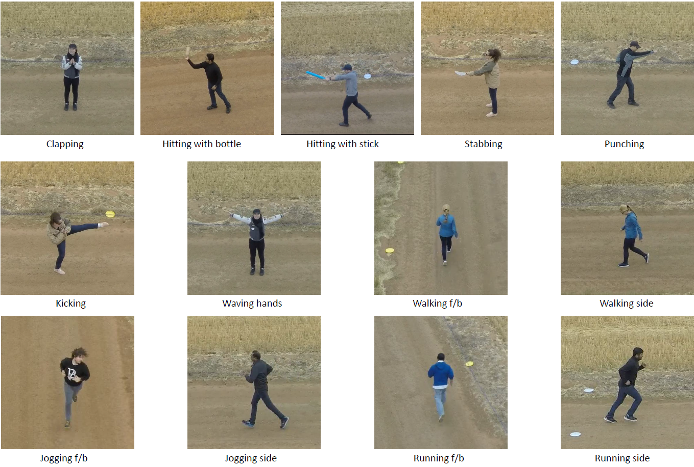

Drone-Action: An Outdoor Recorded Drone Video Dataset for Action Recognition |
| Asanka G Perera, Yee Wei Law, Javaan Chahl |

Aerial human action recognition is an emerging topic in drone applications. Commercial drone platforms capable of detecting basic human actions such as hand gestures have been developed. However, a limited number of aerial video datasets are available to support increased research in to aerial human action analysis. Most of the datasets are confined to indoor scenes or object tracking and many outdoor datasets do not have sufficient human body details to apply state-of-the-art machine learning techniques. To fill this gap and enable research in wider application areas, we present an action recognition dataset recorded in an outdoor setting. A free flying drone was used to record 13 dynamic human actions. The dataset contains 240 high-definition video clips consisting of 66919 frames. All of the videos were recorded from low-altitude and slow speed to capture the maximum human pose details with relatively high resolution. This dataset should be useful to many research areas including action recognition, surveillance, situational awareness and gait analysis. To test the dataset, we evaluated the dataset with a pose-based convolutional neural network (P-CNN) and high-level pose feature (HLPF) descriptors. The overall baseline action recognition accuracy calculated using P-CNN was 75.92%.
| The dataset will be available soon. |
Contact: Asanka Perera